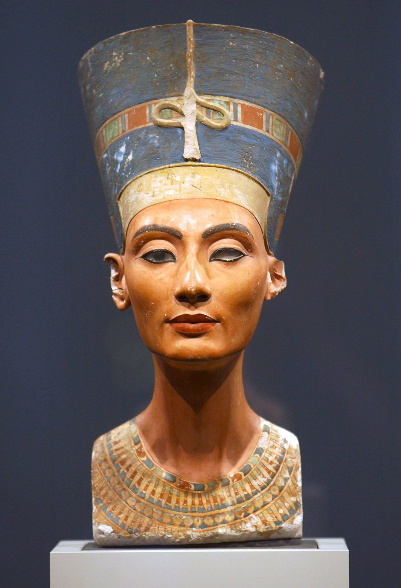
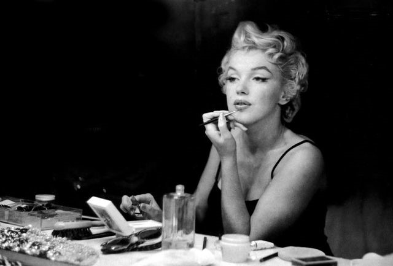

El paso del tiempo en el arte de la belleza
El Kohl Egipcio y la AntigüedadEn el antiguo Egipto, los cosméticos no sólo cumplían una función estética, sino también medicinal y espiritual. Los componentes del kohl servían como desinfectante ocular y repelente de insectos, mientras que los aceites corporales hidrataban la piel bajo el extremo clima desértico. Esta visión del cuidado personal sentó las bases para las siguientes dinastías en Asia y Europa. La Revolución Industrial y el CineCon la llegada del cine en blanco y negro, los actores necesitaban productos que definieran sus facciones bajo las intensas luces de los sets. Esto impulsó la creación de las primeras bases compactas seguras para la piel y tubos de labiales comerciales, transformando un secreto de camerino en un consumo masivo que redefinió la moda callejera del siglo veinte. |
  |